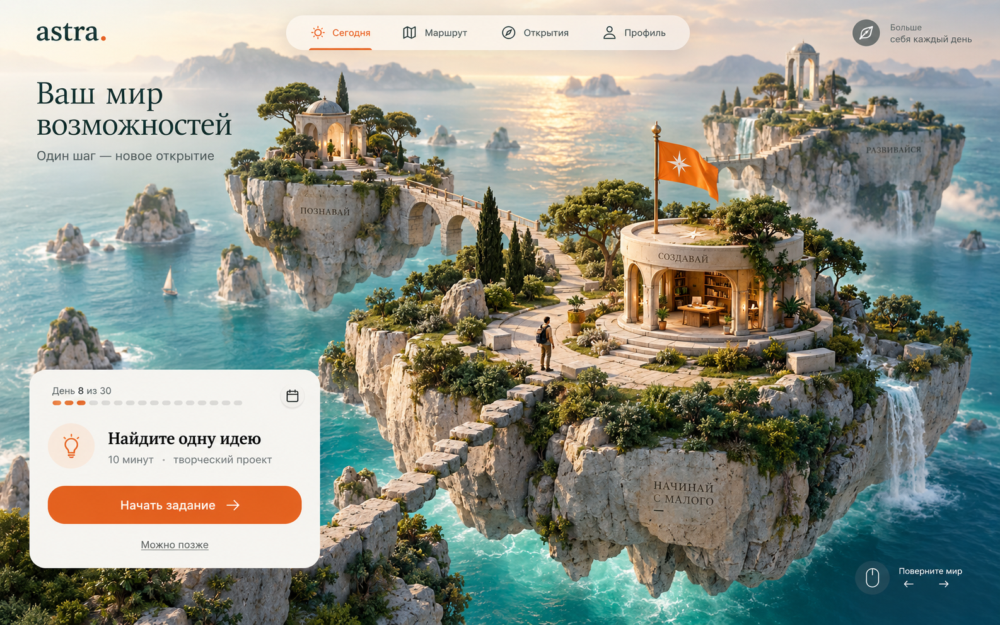

Три направления · один полезный игровой опыт
А если ваш путь — целый мир?
Пространство, которое хочется исследовать.
Действия, которые имеют смысл за его пределами.

01 / Архипелаг
Рекомендую для AstraЛичное путешествие по островам возможностей. Светлый, живой мир: у каждой цели своё место, у каждого небольшого шага — видимый след.
Как это будет двигаться
Вода мягко переливается, флаг отмечает сегодняшнюю пробу. Мир можно повернуть; по нажатию камера приближается к выбранному острову.
Во что мы играем
Пробуете что-то в реальной жизни, сохраняете наблюдение — и на острове появляется новый объект. Открытия складываются в ваш маршрут.
Почему этот вариант
Лучше всего объясняет идею пути и выбора. Атмосфера приключения без ощущения детской игры. Для телефона потребуется более простая 3D-сцена.